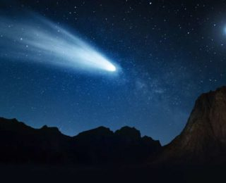

Что такое комета?
 Комета — небольшое небесное тело, обращающееся вокруг Солнца по весьма вытянутой орбите в виде конического сечения. Кометы сравнивают с грязными снежками. И это довольно точное описание. Тело кометы представляет собой слабо связанные между собой льдинки, пыль и камни. Ядро кометы относительно невелико – часто всего несколько километров в поперечнике. Состоит оно в основном из водяного льда и замороженного углекислого газа. Также в теле кометы, как правило, присутствуют окись углерода, метан и аммиак.
Комета – вольный странник,
Блуждающий во тьме,
Между звёзд и планет извиваясь
Подобно огромной змее.
Большинство комет обращается вокруг Солнца далеко за пределами планеты Нептун. И им требуются столетия для совершения одного оборота.
Но орбиты некоторых комет таковы, что иногда они приближаются к Солнцу. Становясь ближе к нему, чем Земля и другие планеты.
Когда это происходит, тепло Солнца заставляет ядро кометы образовывать облако пара из тающего льда (называемое комой), и хвост из газа и пыли.
Этот хвост растягивается на расстояние до десятков миллионов километров. В некоторых случаях кометы и их хвосты настолько велики, что их можно наблюдать в небе невооруженным глазом.
Земная орбита периодически пересекает обломки хвостов комет. Когда эти обломки попадают в атмосферу, они сгорают. При этом создаются короткие, но яркие полосы света. Они известны как падающие звезды, или метеорные потоки. Несколько метеоритных потоков можно наблюдать в одно и то же время каждый год. Пример такого явления – Персеиды. Они напоминают о себе каждый август, и связан с кометой Свифта-Таттла.
Типы комет
Согласно теории форм комет и их хвостов, которая была разработана астрономом Федором Бредихиным еще в конце XlX века, существует несколько типов хвостов комет:
- К первому типу относятся кометы, хвост которых является прямым и тянется в противоположную сторону от Солнца.
- Второй тип включает кометы с широким и изогнутым хвостом.
- К третьему типу относят кометы, чьи неширокие хвосты направлены вдоль их орбиты.
Позднее астрономы объяснили это различным составом комет, материал которых рассеивается разными способами, в зависимости от составляющих химических элементов. Можно выделить т.н. пылевые хвосты – след из газа и пыли, оставляемый кометой позади, зачастую имеет желтоватое свечение, вызванное отраженными солнечными лучами. Другой вид хвостов носит название «плазменный хвост». След такого рода образуется из газа, который под воздействием ультрафиолетового солнечного света начинает электризоваться и превращаться в плазму. Обычно имеет голубоватый оттенок.
Зачастую, хвост комет направлен в противоположную сторону от Солнца, однако очень редко можно заметить кометы, хвосты которых несутся впереди них. Это вызвано тем, что от кометы во все стороны отделяются более крупные частицы, которые слабо подвержены влиянию солнечного ветра, и они остаются на орбите кометы. Большинство этого материала остается позади, но с некоторой точки зрения, кажется, что хвост опережает комету. Но есть и небольшая часть этой пыли, которая окутывает саму комету. В обоих случаях наблюдение этой пыли вызывает затруднение, на фоне более яркого, отражающего материала, образующего плазменный и пылевой хвосты.
Что такое астероид?
 Астероиды - это объекты Солнечной системы различной формы и относительно небольших размеров.
Астероиды состоят в основном из камней и металлов. Это делает их источниками ценных минералов, которые можно добывать в космосе.
Астероиды - это объекты Солнечной системы различной формы и относительно небольших размеров.
Астероиды состоят в основном из камней и металлов. Это делает их источниками ценных минералов, которые можно добывать в космосе.
Астероиды имеют размеры от нескольких метров в диаметре до размеров гор. Или даже континентов. Самый большой из известных астероидов – Церера. Его размер составляет примерно одну четверть от размера Луны. Церера считается карликовой планетой.
Церера является одним из 1,9 миллиона крупных астероидов, вращающихся вокруг Солнца в поясе астероидов. Этот пояс находится между орбитами Марса и Юпитера. Некоторые астероиды иногда попадают во внутреннюю Солнечную систему. Где они (очень редко) сталкиваются с нашей планетой.
Типы астероидов
Классификация астероидов проводится аналогичным образом как классификация звезд – по спектральному классу – интенсивности отражения/поглощения света.
- Класс A – имеет высокий альбедо и красноватый цвет.
Согласно расчетам, состоят из:
- высокотемпературных оливинов;
- смеси металлов (железя и никеля) с оливином.
- Классы B, C, F – углеродные астероиды, которыми представлены 75% известных астероидов. Химический состав таких тел похож на состав протопланетного диска, за исключением водорода, гелия, а также других летучих элементов, которые отсутствует в астероидах этого класса. В составе таких тел возможно наличие воды.
- Классы D, P, T – тела с низким альбедо и спектром с красным оттенком. Астероиды этого класса состоят из
- силикатов, включающих углерод или различные органические вещества;
- возможно присутствие льда.
- Класс E – отличаются наличием в своем составе такого силиката как энстатит – устойчивого к плавлению.
- Класс G – представляет астероиды с невысоким альбедо, отражающие практически бесцветное излучение. Схожи с классом C. Считается, что в состав таких тел входят низкотемпературные гидратированные (с молекулами воды) силикаты, вроде глины и слюды с элементами органических соединений или углерода.
- Классы Q и R – также как и класс A, подразумевает присутствие в составе металлов и оливина, либо пироксена (проще говоря – кремний и оксиген).
- Классы S, V и G – умеренно яркие астероиды. В основном состоят из
- силикатов,
- железа,
- камня,
- пироксена (класс V).
Несмотря на столь обширную классификацию, более старая и более общая включает всего три типа астероидов:
- Класс C – включает 75% известных человечеству астероидов, имеют углеродный состав.
- Класс S – 17% открытых астероидов, силикатный состав.
- Класс M – большая часть остальных астероидов, металлический состав.